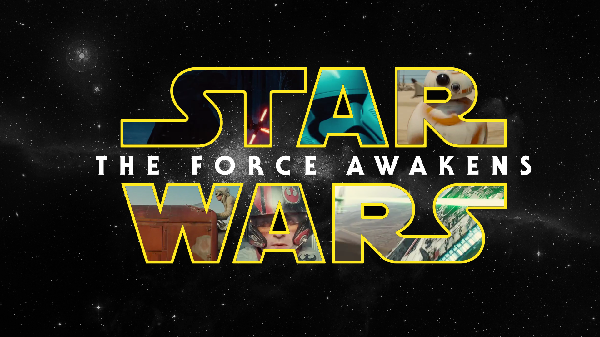

My Review of "The Force Awakens"

I'm sure you've heard all the excitement about the new Star Wars movie, "The Force Awakens." I'm sorry I couldn't wait to watch it with you because I'm away at school. All of my roomates were going so I didn't want to be left out! I hope you understand... To make up for being a bad sister, I reviewed the movie and created this website so you could find out what I thought and so you could learn a little bit more about the movie until you can convince Mom to take you!
Overall Rating
☆ ☆ ☆ ☆
Genre
Action & Adventure, Science Fiction and Fantasy
Runtime
2 hr. 16 min.
Make sure you see it before 8pm otherwise it will be past your bedtime!
Cast
All of your favorite characters return! You're also going to meet some new characters that I think you're going to like.
- Darth Vader
- Princess Leia
- Han Solo
- Chewbacca
- Luke Skywalker
- Kylo Ren *NEW*
- Rey *NEW*
- Finn *NEW*
Basic Plot
The Force Awakens returns 30 years after the defeat of the Galactic Empire but a new threat exists in the galaxy. The grandson of Darth Vader, Kylo Ren revives the First Order in an attempt to take back the galaxy. But a young duo, Rey and Finn, join forces to strengthen the Resistance to defeat Kylo Ren.
I don't want to give away too much but if you really can't wait to see it (or get Mom to drive you...) check out some spoilers .
Reasons why I liked it
- Special Effects
- Kylo Ren's light saber is way cooler than Darth Vader's
- Impressive characters
- Intersting story line
- More true to the original trilogy than the prequel trilogy
- Amazing cast
Recommendations
- See it in Imax
- Get a large soda and popcorn- treat yourself!
- Don't sit next to Mom because she will be confused
This page was created at Virginia Tech